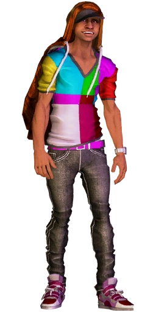
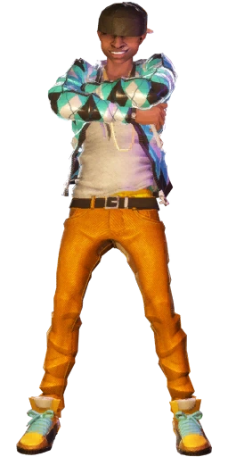
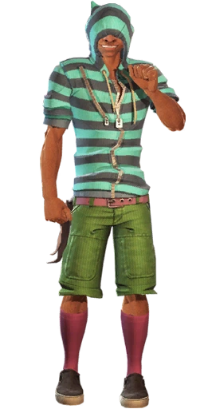
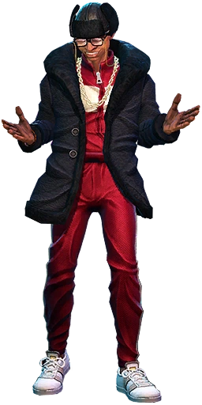
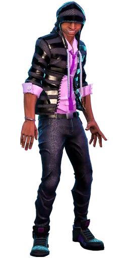

Character Bio
Mo is the default dancer for both the easiest and hardest songs in the first Dance
Central game, those songs being "Poker Face" and "The Way I Are".
- Dance Style: 80s / Pop
- Personality: Bold, confident, energetic
- Vibe: High-energy performance king

Crew Look

Street Style

DC Classic

Retro Fitted

DCI Agent